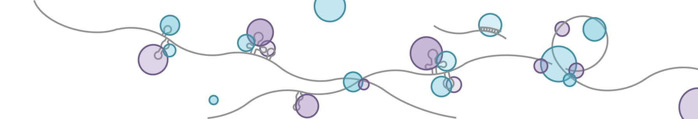

© 2016 lulab @ Tsinghua | Page design derived from Bootstrap
RBP group 
Recently, various CLIP-seq technologies have emerged to detect the RNA binding sites associated with RNA binding protein (RBPs). The peak calling is the most challenge part because it is affected by many factors, such as cross-linking efficiency, RNA abundance, etc. However, the current binding sites of CLIP-seq being published are very noisy and heterogeneous: different samples and different peak calling methods generated very different binding sites, varying from hundreds to tens of thousands.
To define a unified, confident binding sites for the RNA community, we developed a non-negative matrix factorization (NMF) method, which classified 48 RBPs and related RNA binding sites into 18 co-binding groups. The idea behind this is that the co-binding of multiple RBPs in a RBP complex (i.e. HNRNP splicing complex) would generate more confident binding sites. To realize this idea, we developed a fine-tuned quality control pipeline followed by NMF, which allowed one RBP grouped into different clusters. We adapted this soft-clustering method because one RBP could co-bind with different co-factors to play different regulatory roles.
In total, we defined 201,203 binding sites associated with 18 RBP groups. Many of the groups can be well validated by known physical interactions. We also demonstrated that the binding sites and binding affinity we defined were better correlated with RBPs’ function, such as alternative splicing and degradation. Moreover, we also showed that the known motifs were better enriched in the co-bound regions than in the binding sites defined by single RBP’s CLIP-seq data.
This web-based database provides the binding sites and regulatory elements we found
RNA regulatory elements defined by the combinatorial regulation of RNA-binding proteins
Yang Li*, Mu Xiao*, Binbin Shi*, Yu-Cheng T. Yang, Dong Wang, Fei Wang, Marco Marcia, and Zhi John LuGenome Biology
* these authors contributed equally.
© 2016 lulab @ Tsinghua | Page design derived from Bootstrap